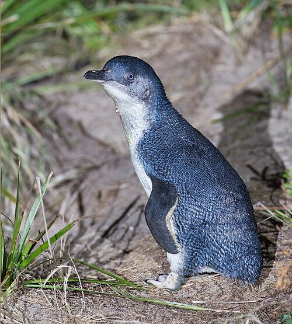

PRUEBA POSICIONAMIENTO IMAGENES
Posiciones por defecto

Posicionamiento relativo con z-index
Posicionamiento relativo con z-index (con texto)
Esta es una imagen de un pinguino bebé
Posicionamiento con float
Posicionamiento mezclando float con relative
Posicionamiento mezclando relative con float
Posicionamiento mezclando absolute con float